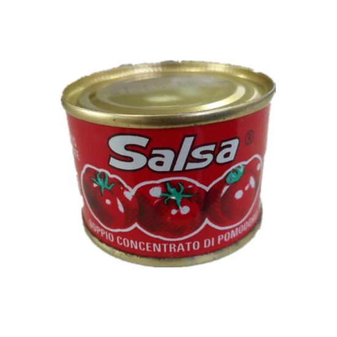

Tienda de abarrotes RTX
El término “abarrotes” tiene un origen marítimo, ya que, antiguamente, “abarrotar” un barco consistía en crear una especie de andamios con barrotes que se llenaban con diversas cosas, especialmente alimento. Así, cuando un barco se llenaba de alimentos para tener víveres que alcanzaran durante los largos viajes, se decía que se “abarrotaba”. Posteriormente, los barcos se abarrotaban también para llevar mercancías a otros lugares, por lo que esos productos, ya en tierra, eran conocidos como “abarrotes”. En otros lugares, también se llamaba “abarrotes” a los bultos que contenían esos productos.
Los servicios que se encuentran disponibles con nosotros:

Granos

Panes

Líquidos
